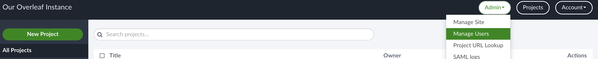
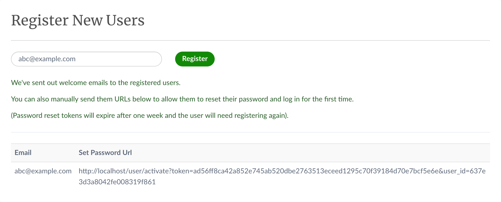

在過去寫paper的時候通常都是使用overleaf來跟大家共同協作並把latex編譯成PDF，在偶然的機會發現到原來overleaf是有開源的版本的，底下介紹一下如何自行建立overleaf的伺服器。
Overleaf介紹
Overleaf是一個線上latex的共同編輯器，提供了一個平台可以讓大家在上面共同編輯latex的文件，與此同時也支援實時編譯和瀏覽結果，適合個人或者團隊在製作paper、投影片或正式文件的時候使用。
在overleaf裡面除了有上述功能以外，還額外整合了git來做版本控制，也能直接在語句中留言，而開源版本的overleaf只有比較基本的共同編輯和實時編譯的功能。
建置Overleaf伺服器
詳細的說明可以參考開源版本overleaf的GitHub。
設置Overleaf
在建立伺服器之前，我們需要先對它進行一些設定，像是要使用哪個port和IP，底下的指令會把overleaf相關的程式碼下載下來，並產生一些預設的設定檔。
git clone https://github.com/overleaf/toolkit.git ./overleaf-toolkit
cd ./overleaf-toolkit
./bin/init
執行完上面的指令以後，會在當前的目錄下建立./config/的資料夾，其中我們比較需要常去修改的是./config/overleaf.rc，在裡面就能去調整伺服器的IP和port了。預設的IP是127.0.0.1，如果想要讓別人可以存取的話，記得把設定改成SHARELATEX_LISTEN_IP=0.0.0.0或是其他想要的IP。
透過Docker建立伺服器
在檔案裡面把參數設定好以後，我們就能開始建立伺服器了。overleaf有提供docker image讓大家直接使用，但會需要先安裝docker和docker-compose，docker-compose可以直接透過pip來安裝。
pip3 install docker-compose
接著就能執行底下的指令把伺服器起起來了。
./bin/up
如果想要把伺服器停掉，可以直接用Ctrl+C停掉，而停掉後想要繼續的話可以用start的指令。
./bin/start
建立Admin帳號
伺服器起來以後需要先建立一個admin帳號，方便之後把其他人加進來一同協作，建立admin的方法是使用瀏覽器直接連線到http://localhost/launchpad，照著提示輸入email和密碼就行了，記得要將網址裡面的localhost改成你設定的IP和port。
開始使用Overleaf
把伺服器開起來並有了admin帳號以後，就能開始使用overleaf來編寫簡單的latex文件了，但如果要在latex裡使用一些\usepackage{}的時候會發現這些package沒有被安裝，原因是因為overleaf提供的docker image只包含了最基本的套件而已，目的是不想要docker image太大以減少下載image需要的時間，如果想要用\usepackage{}的話，我們可以自己更新textlive。
更新textlive
詳細的說明可以參考這邊的文件。
首先，我們需要先連進overleaf的container中
./bin/shell
接著就能透過tlmgr來安裝想要的套件了，tlmgr的使用方式可以下tlmgr help來看說明文件
# The following command is executed in the container
# tlmgr install PACKAGE_YOU_WANT_TO_USE
tlmgr install tikzlings tikzmarmots tikzducks
如果說不想要一個一個把需要的套件安裝進去，想一次安裝全部的話，可以使用底下的指令
# The following command is executed in the container
tlmgr install scheme-full
在安裝完套件以後，理論上就能在伺服器上使用豐富的package了，但這些package在下次重新建立container的時候會消失，如果我們想要保留這個有豐富套件的container，我們可以透過docker commit的方式來保存。
首先，我們先透過exit或Ctrl+D來離開container，接著下底下的指令來儲存一個commit
docker commit sharelatex sharelatex/sharelatex:with-texlive-full
然後在./config/底下建立一個docker-compose.override.yml的檔案，在其中貼上底下的內容
---
version: '2.2'
services:
sharelatex:
image: sharelatex/sharelatex:with-texlive-full
最後再執行底下的指令來重新建立container。
bin/stop && bin/docker-compose rm -f sharelatex && bin/up
開帳號與共享
在開完admin帳號並創立好project以後，我們就可以直接透過瀏覽器去幫其他人開帳號並分享project給他們，開帳號的方式是點畫面右上角Admin底下的Manage Users

在下一個畫面中打上對方的email按下Register後，就能產生啟動連結

記得把啟動連結裡面的localhost替換成前面設定的IP和port以後傳給對方，對方就能透過連結自行設定密碼來建立帳號。
在project內選擇分享並打上對方的email，對方就能在project列表裡面看到邀請通知，點開就能共同編輯同一個project了。如果是新建立的使用者，會需要先創建一個空白的project以後才能跳轉到project列表中。